OFDM with a Fading Channel
Contents
- Housekeeping and Constant Assignment
- (a) Generate Input Bit Sequence
- (b) Convert Bit Sequence to Bit Group Sequence
- (c) Convert Bit Group Sequence into Constellation Symbol Group
- (d) Apply Constellation Symbol Groups to IFFT
- (e) Calculate Gaussian Noise and Rayleigh Fading for Signal
- (ea) Fading Scenario 1 SingleCarrier Modulation,fading Channel
- (eb) Fading Scenario 2 Multicarrier Modulation, fading channel
- (ec) Noise Scenario 3 MultiCarrier Modulation, AWGN channel
- (f) Use FFT to Recover Constellation Symbol
- (g) Implement Demapping to Return Received Symbols to Bit Stream
- (h) Convert From Integer Symbols to Binary
- (i) Calculate Bit Error Rates and display
- (j) Graphs
- Clean Up for next run
Housekeeping and Constant Assignment
close all clc for L=[16 64 256] %size of IFFT/FFT
if L==16 m=4; %m = log2(M) is the number bits per symbol or M = 2^m M=2^m; %number of symbols in M-ary modulation elseif L==64 m=6; %m = log2(M) is the number bits per symbol or M = 2^m M=2^m; %number of symbols in M-ary modulation else m=8; %m = log2(M) is the number bits per symbol or M = 2^m M=2^m; %number of symbols in M-ary modulation end N=200; %number of OFDM symbols
(a) Generate Input Bit Sequence
Generate a random sequence bk of 1s and 0s with equal probability of length m×L×N. Suggested values are: m = 2; L = 16 (64 and 256 are optional); and N = 200 or more.
bits_bk =randi([0 1],[N*L*m 1]); %Input Bit Sequence
(b) Convert Bit Sequence to Bit Group Sequence
Let us consider QPSK, i.e., m = 2 or M = 4. A higher order modulation is an option. Convert groups of m bits mk into a sequence of unsigned decimal values.
bitsTo_M_Vectors_mk = reshape(bits_bk,length(bits_bk)/m,m); %Bit Group
DecimalVector = bi2de(bitsTo_M_Vectors_mk);
(c) Convert Bit Group Sequence into Constellation Symbol Group
Use the constellation diagram below to map mk into constellation symbol sequence Xk. These are complex values (I-Q data).
Symbols_Xk = qammod(DecimalVector,L,0,'gray'); %Constellation Symbol Group
(d) Apply Constellation Symbol Groups to IFFT
Take a block of size L constellation symbols and apply the IFFT algorithm. Repeat this N times. These are complex valued too.
SymbolsIFFT = ifft(Symbols_Xk);
(e) Calculate Gaussian Noise and Rayleigh Fading for Signal
Simulate the channel as appropriate for each scenario. For AWGN, add (I-Q) white Gaussian noise with zero mean; suggested standard deviation values are ? = 0, 0.02, 0.08. The fading cannel can be realized in a number of ways with Rayleigh being the simplest. Here are two models to consider (the second is optional).
sigmaValues = [0.0, 0.02, 0.08]; %Standard Deviation randQ=randn(length(Symbols_Xk),1)*i; %Creates random variations of Q randI=randn(length(Symbols_Xk),1); %Creates random variations of I Noise=(randQ+randI)*sigmaValues; %Imposes Noise to the signal vector % Add Rayleigh Fading to the Signal % Rayleigh (statistical model). The effect of fading is realized as a % scalar h, given by h= sqrt(abs(wI+jwQ)) where wI and wQ are independent % white Gaussian random variables with unit variance. Hint: compute a % new h value for each message symbol period. h=sqrt(abs(Noise));
(ea) Fading Scenario 1 SingleCarrier Modulation,fading Channel
SymbolsOut_rk_SingleCarrier(:,1)=Symbols_Xk+h(:,1)+h(:,1)*i; SymbolsOut_rk_SingleCarrier(:,2)=Symbols_Xk+h(:,2)+h(:,2)*i; SymbolsOut_rk_SingleCarrier(:,3)=Symbols_Xk+h(:,3)+h(:,3)*i;
(eb) Fading Scenario 2 Multicarrier Modulation, fading channel
SymbolsOut_rk_woNoise(:,1)=SymbolsIFFT+h(:,1)+h(:,1)*i; SymbolsOut_rk_woNoise(:,2)=SymbolsIFFT+h(:,2)+h(:,2)*i; SymbolsOut_rk_woNoise(:,3)=SymbolsIFFT+h(:,3)+h(:,3)*i;
(ec) Noise Scenario 3 MultiCarrier Modulation, AWGN channel
SymbolsOut_rk(:,1)=SymbolsIFFT+Noise(:,1); SymbolsOut_rk(:,2)=SymbolsIFFT+Noise(:,2); SymbolsOut_rk(:,3)=SymbolsIFFT+Noise(:,3);
(f) Use FFT to Recover Constellation Symbol
(fa) N/A (fb) FFT Scenario 2 Multicarrier Modulation, fading channel
SymbolsInFFT_Rayleigh(:,1) = fft(SymbolsOut_rk_woNoise(:,1));
SymbolsInFFT_Rayleigh(:,2) = fft(SymbolsOut_rk_woNoise(:,2));
SymbolsInFFT_Rayleigh(:,3) = fft(SymbolsOut_rk_woNoise(:,3));
% (fc) FFT Scenario 3 MultiCarrier Modulation, AWGN channel
SymbolsInFFT_AWGM(:,1) = fft(SymbolsOut_rk(:,1));
SymbolsInFFT_AWGM(:,2) = fft(SymbolsOut_rk(:,2));
SymbolsInFFT_AWGM(:,3) = fft(SymbolsOut_rk(:,3));
(g) Implement Demapping to Return Received Symbols to Bit Stream
(ga) Demap Scenario 1 SingleCarrier Modulation,fading Channel
SymbolsIn_dk_Single(:,1) = qamdemod(SymbolsOut_rk_SingleCarrier(:,1),L,0,'gray'); SymbolsIn_dk_Single(:,2) = qamdemod(SymbolsOut_rk_SingleCarrier(:,2),L,0,'gray'); SymbolsIn_dk_Single(:,3) = qamdemod(SymbolsOut_rk_SingleCarrier(:,3),L,0,'gray'); % (gb) Demap Scenario 2 Multicarrier Modulation,Raleigh fading channel SymbolsIn_dk_Rayleigh(:,1) = qamdemod(SymbolsInFFT_Rayleigh(:,1),L,0,'gray'); SymbolsIn_dk_Rayleigh(:,2) = qamdemod(SymbolsInFFT_Rayleigh(:,2),L,0,'gray'); SymbolsIn_dk_Rayleigh(:,3) = qamdemod(SymbolsInFFT_Rayleigh(:,3),L,0,'gray'); % (gc) Demap Scenario 3 MultiCarrier Modulation, AWGN channel SymbolsIn_dk(:,1) = qamdemod(SymbolsInFFT_AWGM(:,1),L,0,'gray'); SymbolsIn_dk(:,2) = qamdemod(SymbolsInFFT_AWGM(:,2),L,0,'gray'); SymbolsIn_dk(:,3) = qamdemod(SymbolsInFFT_AWGM(:,3),L,0,'gray');
(h) Convert From Integer Symbols to Binary
%Rayleigh-Single Carrier DecimalVector_To_Binary_ck_Single(:,1:m) = de2bi(SymbolsIn_dk_Single(:,1),m); DecimalVector_To_Binary_ck_Single(:,m+1:2*m) = de2bi(SymbolsIn_dk_Single(:,2),m); DecimalVector_To_Binary_ck_Single(:,2*m+1:3*m) = de2bi(SymbolsIn_dk_Single(:,3),m); bitsIn_ck_Single(:,1)=reshape(DecimalVector_To_Binary_ck_Single(:,1:m),[N*L*m 1]); bitsIn_ck_Single(:,2)=reshape(DecimalVector_To_Binary_ck_Single(:,m+1:2*m),[N*L*m 1]); bitsIn_ck_Single(:,3)=reshape(DecimalVector_To_Binary_ck_Single(:,2*m+1:3*m),[N*L*m 1]); %Rayleigh-MultiCarrier DecimalVector_To_Binary_ck_Rayleigh(:,1:m) = de2bi(SymbolsIn_dk_Rayleigh(:,1),m); DecimalVector_To_Binary_ck_Rayleigh(:,m+1:2*m) = de2bi(SymbolsIn_dk_Rayleigh(:,2),m); DecimalVector_To_Binary_ck_Rayleigh(:,2*m+1:3*m) = de2bi(SymbolsIn_dk_Rayleigh(:,3),m); bitsIn_ck_Rayleigh(:,1)=reshape(DecimalVector_To_Binary_ck_Rayleigh(:,1:m),[N*L*m 1]); bitsIn_ck_Rayleigh(:,2)=reshape(DecimalVector_To_Binary_ck_Rayleigh(:,m+1:2*m),[N*L*m 1]); bitsIn_ck_Rayleigh(:,3)=reshape(DecimalVector_To_Binary_ck_Rayleigh(:,2*m+1:3*m),[N*L*m 1]); %AWGM-MultiCarrier DecimalVector_To_Binary_ck(:,1:m) = de2bi(SymbolsIn_dk(:,1),m); DecimalVector_To_Binary_ck(:,m+1:2*m) = de2bi(SymbolsIn_dk(:,2),m); DecimalVector_To_Binary_ck(:,2*m+1:3*m) = de2bi(SymbolsIn_dk(:,3),m); bitsIn_ck(:,1)=reshape(DecimalVector_To_Binary_ck(:,1:m),[N*L*m 1]); bitsIn_ck(:,2)=reshape(DecimalVector_To_Binary_ck(:,m+1:2*m),[N*L*m 1]); bitsIn_ck(:,3)=reshape(DecimalVector_To_Binary_ck(:,2*m+1:3*m),[N*L*m 1]);
(i) Calculate Bit Error Rates and display
fprintf('\nL = %d N = %d\n',L,N) fprintf('\n Sigma = 0.0\n') [numErrors,ber]=biterr(bits_bk,bitsIn_ck_Single(:,1)); fprintf('\nThe bit error rate = %5.2e, based on %d errors for single carrier fading.\n', ber,numErrors) [numErrors,ber]=biterr(bits_bk,bitsIn_ck_Rayleigh(:,1)); fprintf('\nThe bit error rate = %5.2e, based on %d errors for multiple carrier fading.\n', ber,numErrors) [numErrors,ber]=biterr(bits_bk,bitsIn_ck(:,1)); fprintf('\nThe bit error rate = %5.2e, based on %d errors for AWGN.\n', ber,numErrors) fprintf('\n Sigma = 0.02\n') [numErrors,ber]=biterr(bits_bk,bitsIn_ck_Single(:,2)); fprintf('\nThe bit error rate = %5.2e, based on %d errors for single carrier fading.\n', ber,numErrors) [numErrors,ber]=biterr(bits_bk,bitsIn_ck_Rayleigh(:,2)); fprintf('\nThe bit error rate = %5.2e, based on %d errors for multiple carrier fading.\n', ber,numErrors) [numErrors,ber]=biterr(bits_bk,bitsIn_ck(:,2)); fprintf('\nThe bit error rate = %5.2e, based on %d errors for AWGN.\n', ber,numErrors) fprintf('\n Sigma = 0.08\n') [numErrors,ber]=biterr(bits_bk,bitsIn_ck_Single(:,3)); fprintf('\nThe bit error rate = %5.2e, based on %d errors for single carrier fading.\n', ber,numErrors) [numErrors,ber]=biterr(bits_bk,bitsIn_ck_Rayleigh(:,3)); fprintf('\nThe bit error rate = %5.2e, based on %d errors for multiple carrier fading.\n', ber,numErrors) [numErrors,ber]=biterr(bits_bk,bitsIn_ck(:,3)); fprintf('\nThe bit error rate = %5.2e, based on %d errors for AWGN.\n', ber,numErrors)
L = 16 N = 200 Sigma = 0.0 The bit error rate = 0.00e+00, based on 0 errors for single carrier fading. The bit error rate = 0.00e+00, based on 0 errors for multiple carrier fading. The bit error rate = 0.00e+00, based on 0 errors for AWGN. Sigma = 0.02 The bit error rate = 0.00e+00, based on 0 errors for single carrier fading. The bit error rate = 3.06e-01, based on 3916 errors for multiple carrier fading. The bit error rate = 1.40e-01, based on 1797 errors for AWGN. Sigma = 0.08 The bit error rate = 0.00e+00, based on 0 errors for single carrier fading. The bit error rate = 4.17e-01, based on 5344 errors for multiple carrier fading. The bit error rate = 4.02e-01, based on 5140 errors for AWGN.
L = 64 N = 200 Sigma = 0.0 The bit error rate = 0.00e+00, based on 0 errors for single carrier fading. The bit error rate = 0.00e+00, based on 0 errors for multiple carrier fading. The bit error rate = 0.00e+00, based on 0 errors for AWGN. Sigma = 0.02 The bit error rate = 0.00e+00, based on 0 errors for single carrier fading. The bit error rate = 3.68e-01, based on 28240 errors for multiple carrier fading. The bit error rate = 2.37e-01, based on 18202 errors for AWGN. Sigma = 0.08 The bit error rate = 0.00e+00, based on 0 errors for single carrier fading. The bit error rate = 4.40e-01, based on 33827 errors for multiple carrier fading. The bit error rate = 4.33e-01, based on 33292 errors for AWGN.
L = 256 N = 200 Sigma = 0.0 The bit error rate = 0.00e+00, based on 0 errors for single carrier fading. The bit error rate = 0.00e+00, based on 0 errors for multiple carrier fading. The bit error rate = 0.00e+00, based on 0 errors for AWGN. Sigma = 0.02 The bit error rate = 0.00e+00, based on 0 errors for single carrier fading. The bit error rate = 4.01e-01, based on 164272 errors for multiple carrier fading. The bit error rate = 3.05e-01, based on 125033 errors for AWGN. Sigma = 0.08 The bit error rate = 0.00e+00, based on 0 errors for single carrier fading. The bit error rate = 4.55e-01, based on 186485 errors for multiple carrier fading. The bit error rate = 4.51e-01, based on 184866 errors for AWGN.
(j) Graphs
splotfig1=scatterplot(SymbolsOut_rk_SingleCarrier(:,1),1,0,'g.'); hold on %scatterplot(Symbols_Xk,1,0,'k*',splotfig1); title(strcat('Single Carrier: L = ', {' '},num2str(L),' sigma = 0.0')) axis([-m m -m m]) splotfig2=scatterplot(SymbolsOut_rk_SingleCarrier(:,1),1,0,'g.'); hold on %scatterplot(Symbols_Xk,1,0,'k*',splotfig2); title(strcat('Single Carrier: L = ', {' '},num2str(L),' sigma = 0.02')) axis([-m m -m m]) splotfig3=scatterplot(SymbolsOut_rk_SingleCarrier(:,1),1,0,'g.'); hold on %scatterplot(Symbols_Xk,1,0,'k*',splotfig3); title(strcat('Single Carrier: L = ', {' '},num2str(L),' sigma = 0.08')) axis([-m m -m m]) splotfig4=scatterplot(SymbolsInFFT_Rayleigh(:,1),1,0,'g.'); hold on %scatterplot(Symbols_Xk,1,0,'k*',splotfig4); title(strcat('Multiple Carrier: L = ', {' '},num2str(L),' sigma = 0.0')) axis([-m m -m m]) splotfig5=scatterplot(SymbolsInFFT_Rayleigh(:,2),1,0,'g.'); hold on scatterplot(Symbols_Xk,1,0,'k*',splotfig5); title(strcat('Multiple Carrier: L = ', {' '},num2str(L),' sigma = 0.02')) axis([-m m -m m]) splotfig6=scatterplot(SymbolsInFFT_Rayleigh(:,3),1,0,'g.'); hold on scatterplot(Symbols_Xk,1,0,'k*',splotfig6); title(strcat('Multiple Carrier: L = ', {' '},num2str(L),' sigma = 0.08')) axis([-m m -m m]) splotfig7=scatterplot(SymbolsInFFT_AWGM(:,1),1,0,'g.'); hold on %scatterplot(Symbols_Xk,1,0,'k*',splotfig7); title(strcat('Multiple Carrier AWGN: L = ', {' '},num2str(L),' sigma = 0.0')) axis([-m m -m m]) splotfig8=scatterplot(SymbolsInFFT_AWGM(:,2),1,0,'g.'); hold on scatterplot(Symbols_Xk,1,0,'k*',splotfig8); title(strcat('Multiple Carrier AWGN: L = ', {' '},num2str(L),' sigma = 0.02')) axis([-m m -m m]) splotfig9=scatterplot(SymbolsInFFT_AWGM(:,3),1,0,'g.'); hold on scatterplot(Symbols_Xk,1,0,'k*',splotfig9); title(strcat('Multiple Carrier AWGN: L = ', {' '},num2str(L),', sigma = 0.08')) axis([-m m -m m])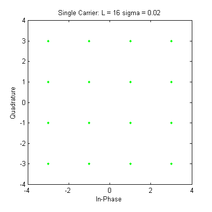 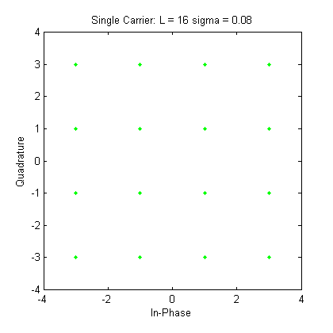 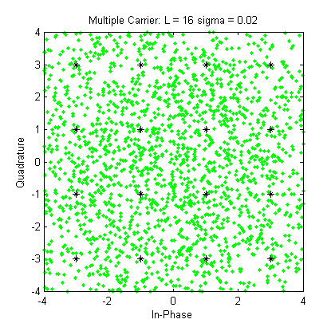 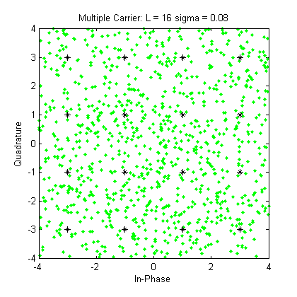 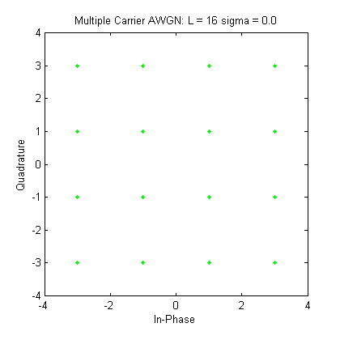 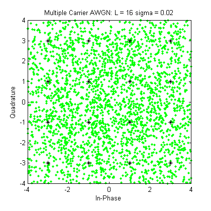 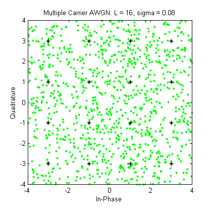 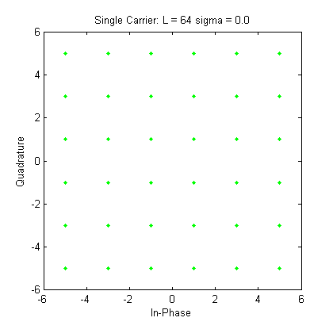 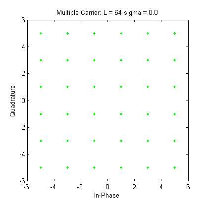 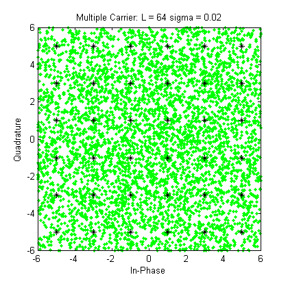 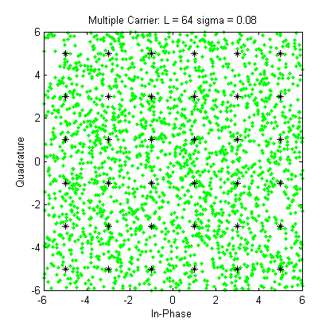 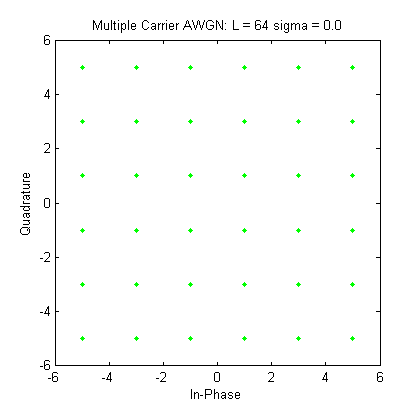 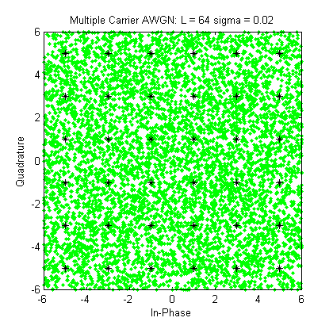 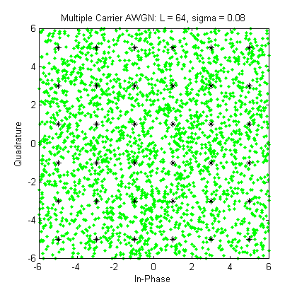 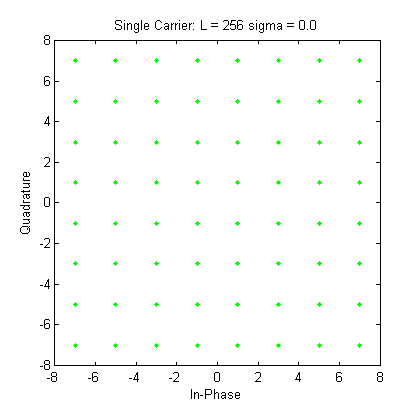 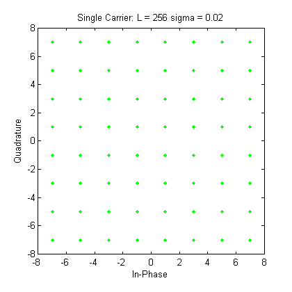 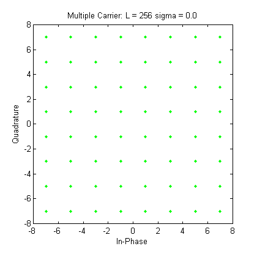 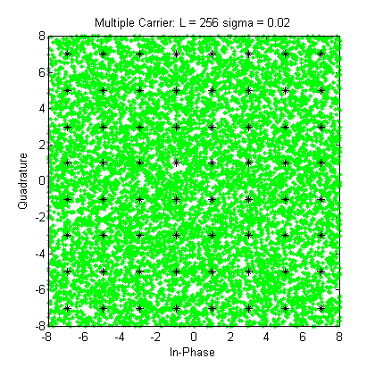 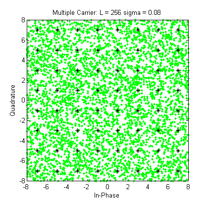 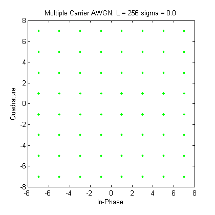 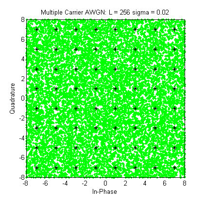 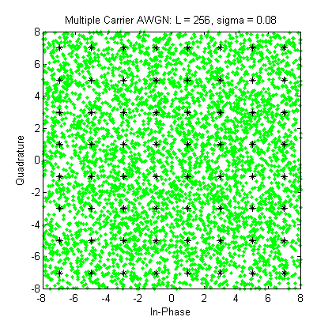
Clean Up for next run
clear all
end